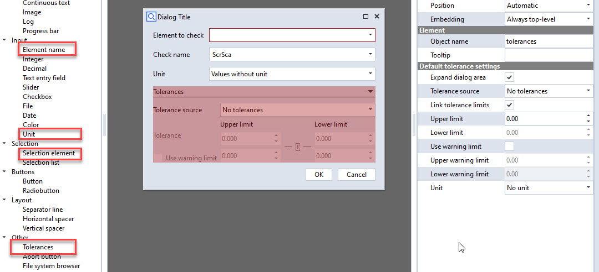

Scripted checks
Note
This section assumes that you are familiar with the basic concept of Scripted elements. If not, take a look at the Introduction and Scripted actuals sections.
Introduction
Scripted checks are a specialization of scripted elements to realize customized inspections in the ZEISS Software. Use checks if you want to display the deviation of certain properties of existing elements.
Writing a scripted check
The script structure to create a scripted check is the same as for Scripted actuals. However, there are some specialities:
Useful dialog widgets
In most cases, you need to ask the user for the element to check, check naming or tolerance inputs. To this end, you can use the Selection element, Element name, Unit and Tolerances widgets:

“Special” parameters
For a successful integration with the native checks, unit and tolerance need to be set to the returned params.
params['tolerance'] = DIALOG.tolerances.value
params['unit'] = DIALOG.unit.value
params['abbreviation'] = 'ScrSca'
Furthermore, checks shall be assigned an abbreviation. This is the short form you’ll see in the 3D view labels of the check, or in the result table.
See also
Detailed description of the Scripted element API
Documentation of the Unit widget
Documentation of the Tolerances widget
Types of scripted checks
Currently, three types of scripted checks are supported. The Python API Examples App provides examples for all three. Click on the respective links to get to the example documentation.
Scripted scalar check: Check an element and assign a simple scalar value pair (nominal/actual) to it. See ScriptedScalarCheck.
Scripted curve check: Check an existing curve element and assign actual/nominal values for each point of the curve. See ScriptedCurveCheck.
Scripted surface check: Check an existing mesh element and assign deviation values for each point in the mesh. See ScriptedSurfaceCheck.